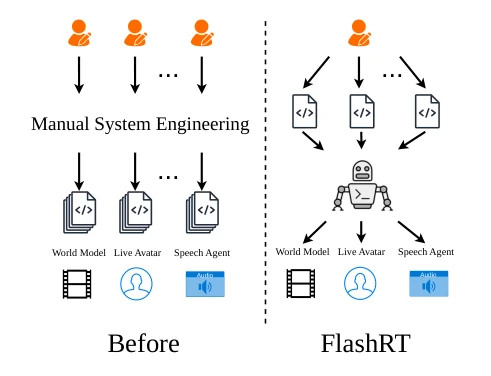
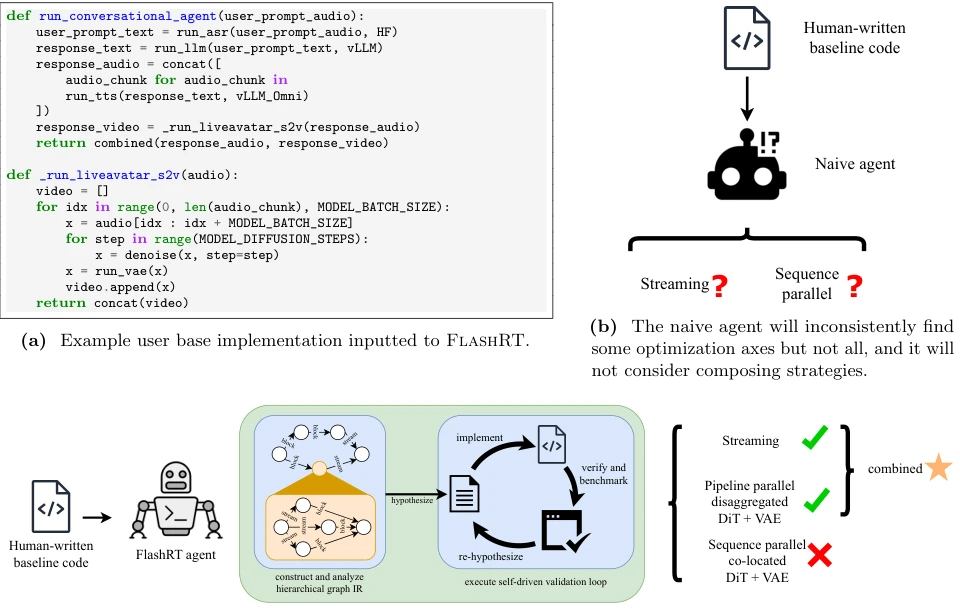

FlashRT executed this task admirably, shifting Agents from writing code to tuning systems. Previously, multimodal deployment relied either on experts writing manually (tedious) or compilers (too rigid). This paper uses Agents for 'Chain-of-programming', automatically converting single-card code to multi-card deployment. 70x latency optimization sounds impressive, but the cost is that Agent inference itself may be slow and unstable, and relies on specific model interfaces. However, cross-hardware (NVIDIA/AMD) generalization is indeed appealing, after all, AMD's optimization ecosystem is not as good as NVIDIA's. Agents can instead make up for the lack of expert knowledge, even defeating vLLM-Omni on Qwen3-Omni. The downside is it does not mention the Agent's own overhead, nor how to ensure multi-round iterations do not deviate, raising doubts about production environment stability. It proves Agents can handle NP-hard deployment problems by reducing search space through intermediate representation, but essentially it is still 'trial and error', determinism for complex scenarios is not as good as traditional compilers. Although this automation reduces manpower, it introduces new uncertainties, worth cautious evaluation in the industry.
Multimodal applications (such as voice Agents, video generation) exhibit model heterogeneity, deployment strategies are complex (placement, streaming, parallelism). Existing systems like vLLM-Omni (Yin et al., 2026) have fixed strategies, unable to flexibly trade-off latency/throughput. Auto-parallelism (FlexFlow, Alpa) targets homogeneous DNNs, not adaptable to heterogeneous pipelines. Compilers (TVM) granularity is too fine. Manual optimization is not scalable. Deployment problems are essentially NP-hard, fixed strategies cannot cover all scenarios. New applications grow fast, manual implementation efficiency is low. Existing systems limit deployment strategies, unable to adapt to diverse application needs. For example, vLLM-Omni only supports static strategies, Cornserve is the same. This leads to new applications needing to redevelop systems, hard to scale.

Figure 1 Previously, efficiently serving diverse multimodal applications required manual systems effort per application. FlashRT solves this by guiding a coding agent to design efficient deployments.
The core is Chain-of-program. 1. IR Construction: Layered DAG, nodes annotated with persistent state (KV cache), edges annotated with streaming/blocking. 2. Static Analysis: Identify parallel opportunities. 3. Verification Loop: Agent designs test harness, simulates user input, verifies correctness and benchmark. Agent iteratively optimizes, combines strategies (e.g., streaming + pipeline parallelism). IR design forces Agent to consider different granularities. Verification loop ensures semantic correctness. Variant queue manages strategy diversity. Agent understands program structure through intermediate representation, avoiding direct conversion failures. Specifically, IR exposes graph hierarchy, node states, and edge streaming attributes. Static analysis tools assist Agent in discovering parallel nodes. In the verification loop, Agent designs test cases, compares baseline outputs, measures latency and throughput. Through iteration, Agent explores multiple deployment variants, finally selects the optimal solution.

Figure 2 Overall view of different agent workflows. (a) shows an example input to the ideal system. (b) shows the result of naively tasking an agent to optimize a base implementation. (c) shows how failure cases are addressed by FlashRT’s agent workflow.
5 applications (LiveAvatar, Qwen3-Omni, Krea, WorldPlay, LongLive). Hardware B200 and MI355X. Results: Latency max drop 70x, throughput 3.6x. Beats vLLM-Omni on AMD (65% latency reduction). Shows latency/throughput trade-off (co-location vs disaggregation). Ablation experiments show the effect of different strategy combinations. Cross-hardware consistency validates generalization capability. Agent automatically selects optimal deployment under different GPU budgets. For example, LiveAvatar reaches 173 FPS on 8 cards. Qwen3-Omni on AMD is better than vLLM-Omni. WorldPlay shows performance changes under different GPU counts.